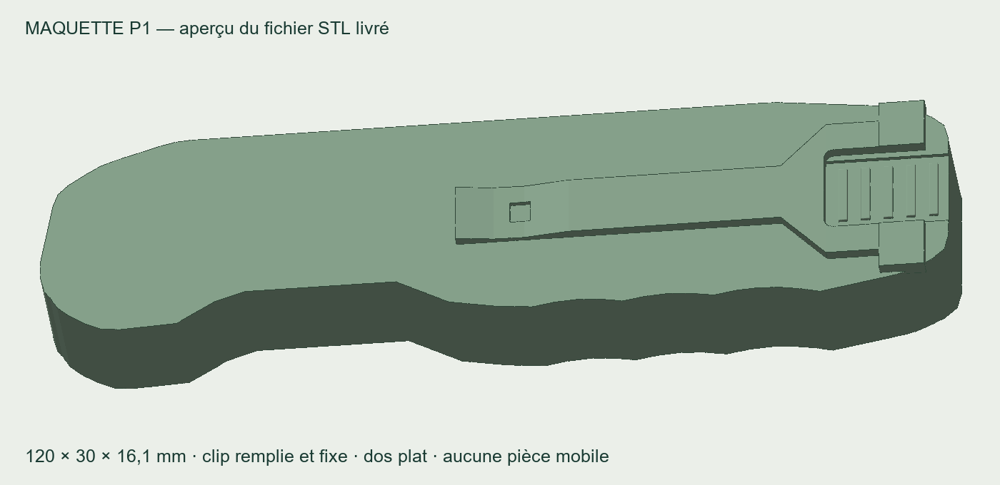

À envoyer à l’imprimeuse
Envoyez-lui simplement cette page. Le paquet contient le modèle corrigé et une fiche d’instructions d’une page.
ZIP d’environ 190 Ko. STL et 3MF sont deux formats du même objet : l’atelier en choisit un seul.
Ce qui sera imprimé
La forme du couteau fermé, ses rainures de contour, le relief de la clip et les cinq nervures de prise au pouce. L’intérieur et le dessous de la clip sont remplis; le dos est plat pour poser la maquette sur le plateau.
La clip est fixe. La lame et les accessoires ne sortent pas. Cette maquette sert à essayer la forme dans la main; elle ne teste pas les mécanismes ni le poids final du couteau métallique.
Les couleurs et les microtextures de la démonstration ne sont pas reproduites dans une impression PLA standard.
Le fichier a été préparé et contrôlé
Un seul solide fermé. Import des deux formats et essai de tranchage réussis dans PrusaSlicer 2.9.2.
L’essai générique indique environ 29 g de PLA et 3 h 07, supports compris. L’imprimeuse doit utiliser les réglages de sa machine, vérifier les supports puis lancer une première impression. Aucun exemplaire physique n’a encore été testé.
Ce paquet remplace le STL précédent pour cet essai de prise en main. Il ne contient pas l’ancien fichier signalé comme non validé.
Fichiers individuels pour l’atelier
L’étui compatible est disponible
Pour faire imprimer un étui creux adapté à cette maquette P1 :
Voir l’étui E1 et ses fichiers